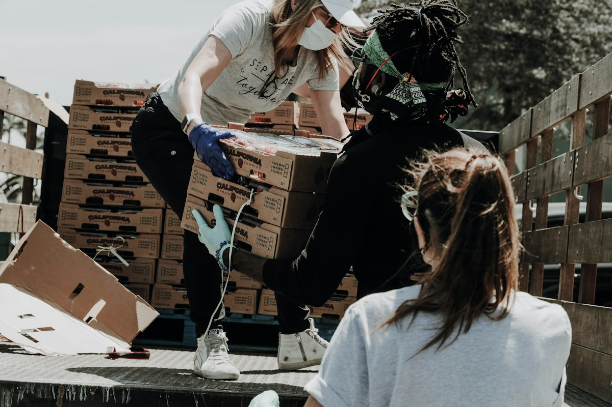
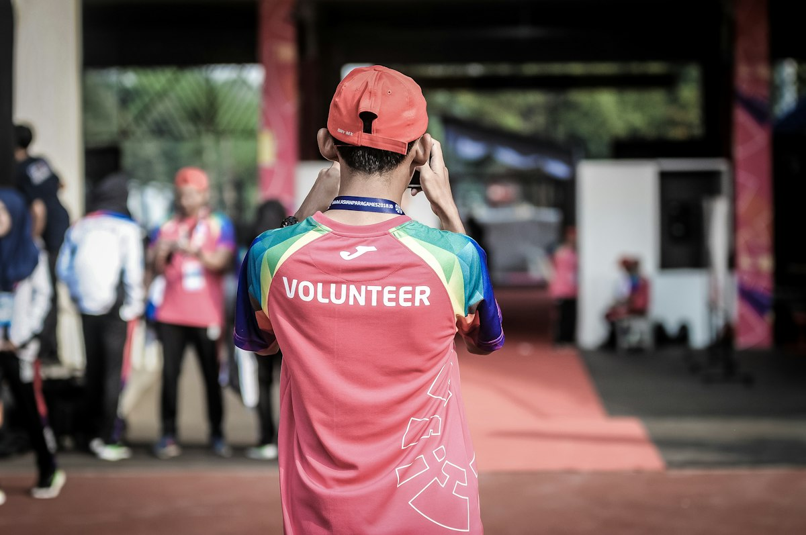

Welcome to Sisonke Food Bank
Sisonke Food Bank is a community-driven non-profit organisation dedicated to fighting hunger in Pretoria and Mamelodi. Together, we collect food donations and serve warm meals to individuals and families facing food insecurity, because no one should have to go without.
About Our Website
This website was created to help Sisonke Food Bank reach more people in our community — whether you need support, want to volunteer your time, or are looking to donate or sponsor our work. Here you can learn about who we are, see the services we offer, and get in touch with us directly.
Our Main Services
We provide food parcels and nutritious meals to families in need, deliver support to elderly and vulnerable members of our community, and offer immediate food assistance to those facing unexpected emergencies. Learn more about our services.
Frequently Asked Questions
Anyone facing hunger in Pretoria or Mamelodi is welcome. Visit either branch during opening hours, or read about our Immediate Food Assistance programme for urgent cases.
Fill in our enquiry form, choose “Volunteering” and pick a start date. We will confirm your shift and provide all equipment and training.
Drop non-perishable food at either branch, or use the enquiry form to sponsor families and receive an instant cost estimate.
We have branches in Pretoria Central and Mamelodi, open Monday to Friday 08:00 – 16:00 and Saturday 08:00 – 14:00. See the interactive map for directions.